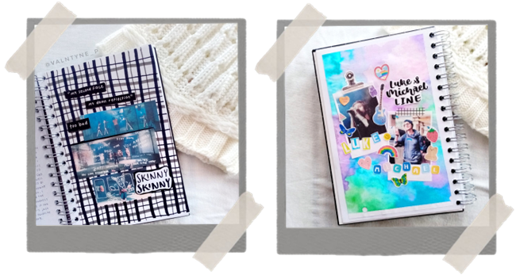
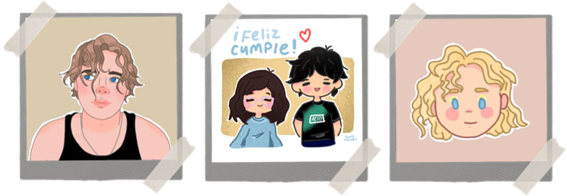

Realmente tengo bastantes pasatiempos, unos más frecuentes que otros, pero al final de cuentas siguen siendo muchos. Usualmente digo que hago de todo un poco puesto que me gusta aprender y disfrutar de todo lo que pueda. A continuación les presentaré los pasatiempos que más realizo comunmente.
Journaling
Básicamente el término journaling hace referencia al método de llevar un cuaderno en el que día a día se plasman pensamientos, deseos, miedos, gustos, etc. Es una especie de diario en el que, irónicamente, no tienes que escribir todos los días, si no cuando lo necesites. Así mismo, puedes decorarlo con los materiales que desees, mayormente se suelen plasmar collage, dibujos, entre otros.
Es uno de mis pasatiempos favoritos y que suelo hacer con más frecuencia, me relaja mucho estar decorando hojitas sobre canciones que me gustan de mi banda favorita, sobre mis pensamientos, sobre todo lo que pueda. En la anterior foto puedes ver unas hojitas que he decorado en mis tiempos libres.
Escribir y leer
Siempre he sido el tipo de persona que le gusta imaginarse mundos alternos o cosas muy ficticias y no hay mejor forma de lograrlo que leyendo. Leer es una de las más grandes satisfacciones que tengo, lo disfruto mucho, aunque no puedo negar que igual lloro a mares. Sin libros no sería yo.
Con el paso del tiempo, mientras más iba leyendo, más me entraban las ganas de crear algo y fue así como en el 2017 el escribir historias se convirtió en uno de mis más grandes pasatiempos. Actualmente cuento con siete historias en proceso, algunas suelo publicarlas en wattpad y otras prefiero mantenerlas en privacidad.
Dibujar
Creo que este ha sido el pasatiempo más durarero y que siempre está presente. Yo dibujo desde que tengo uso de razón, ha sido una gran forma de expresar todo lo que tengo en mente y para matar el tiempo. Suelo hacerlo cuando me encuenro aburrida o al instante que llega la inspiración.
En las anteriores fotos pueden ver algunas de las cosas que he experimentado en la aplicación ibis paint (la cual es muy buena y útil). No es lo mejor que haya hecho, pero para ser mis primeras veces usando la app y haciéndolo con mis deditos, no está tan mal.
Ahora ando en búsqueda de un estilo propio de dibujo y me encuentro practicando mucho la anatomía ya que es la parte que más se me dificulta. De igual modo, he empezado a experimentar con el dibujo digital, es muy asombroso todo lo que se puede hacer tan solo en el celular, mi meta ahora es conseguirme una tableta gráfica para seguir practicando.